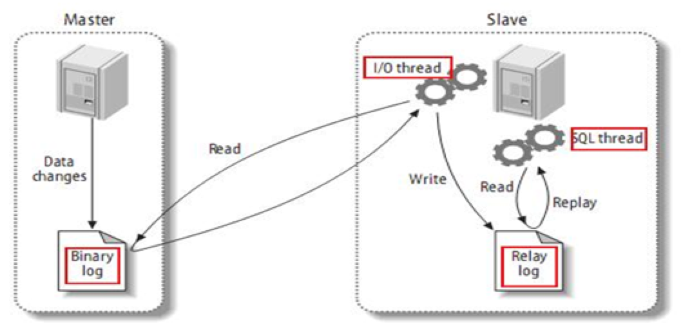
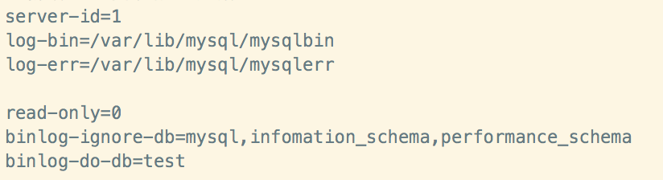
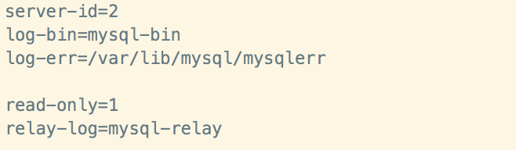
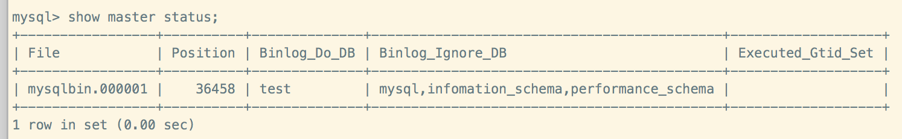
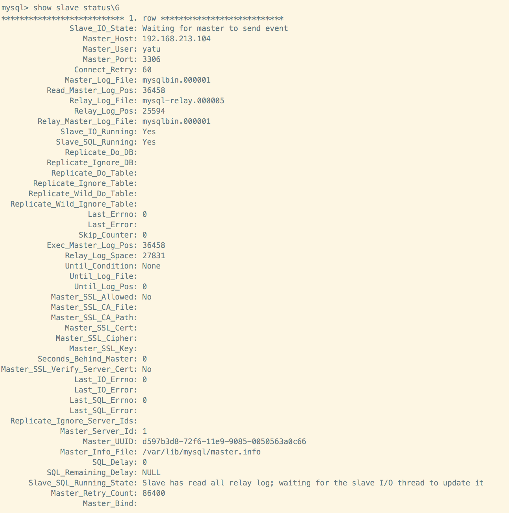
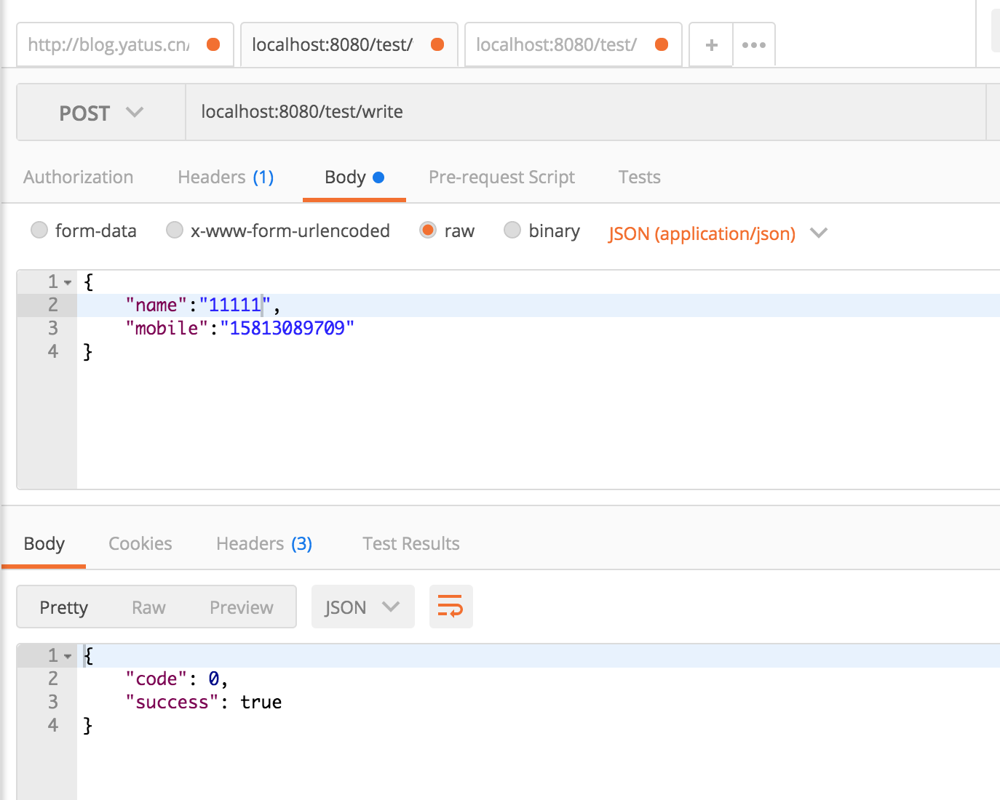
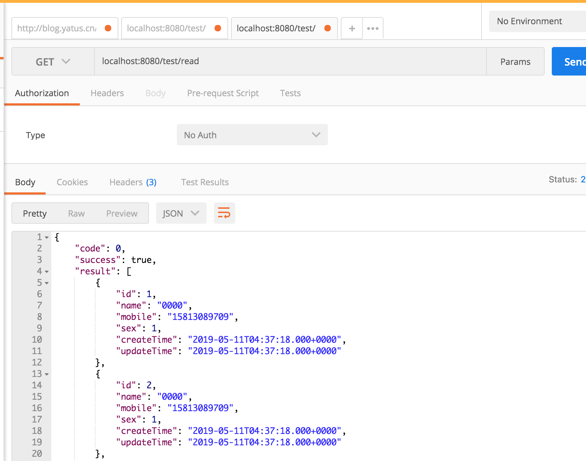

上次介绍了基于springboot整合多个数据源，并利用aop、ThreadLocal和AbstractRoutingDataSource实现动态实现读写分离功能。这次，结合mysql自身的bin-log和relay-log形式实现真正的读写分离(这里仅供学习使用，因复制的最大问题是延时，实际生产环境不建议使用)。
mysql主从复制的基本原理

mysql复制过程分成如下三步：
- master将改变记录到二进制日志（binary log）。这些记录过程叫做二进制日志事件(binary log events)；
- slave将master的binary log events拷贝到它的中继日志(relay log)；
- slave重做中继日志中的事件，将改变应用到自己的数据库中(mysql复制是异步的且串行化的)。
mysql主从复制的基本原则
- 每个slave只有一个master；
- 每个slave只能有一个唯一的服务器ID；
- 每个master可以有多个salve。
涉及改动的my.cnf配置
- 关于主库
| 属性 | 描述 | 是否必须 |
|---|---|---|
| server-id | 唯一的服务器ID，在集群中要全局唯一 | 是 |
| log-bin | 指定bin-log的输出目录，启用二进制日志 | 是 |
| log-err | 指定err-log的输出目录,启用错误日志 | 否 |
| read-only | 是否只读，当时0时，读写均可，1时只读 | 是 |
| datadir | 数据目录，保持默认就好 | 否 |
| binlog-ignore-db | 设置不要复制的数据库，多个逗号分开 | 否 |
| binlog-do-db | 设置需要复制的数据库 | 否 |
- 关于从库
| 属性 | 描述 | 是否必须 |
|---|---|---|
| server-id | 唯一的服务器ID，在集群中要全局唯一 | 是 |
| log-bin | 从库这里指定是mysql-bin | 是 |
| relay-log | 从库这里启用中继日志，指定是mysql-relay | 是 |
| read-only | 是否只读，当时0时，读写均可，1时只读，从库这里指定是1，只读 | 是 |
| log-err | 指定err-log的输出目录,启用错误日志 | 否 |
| datadir | 数据目录，保持默认就好 | 否 |
案例实践
- 利用上一个例子(springboot整合多数据源&读写分离(一)),仅修改其数据库配置，使其支持主从复制，读写分离，配置如下
1 | server: |
- 使用两台虚拟机，安装好mysql服务器，关闭防火墙
注意：mysql版本一致且后台以服务运行,且保证两个虚拟机的网络能互连
| ip | 端口 | 用户/密码 | 数据库 | 角色 |
|---|---|---|---|---|
| 192.168.213.104 | 3306 | yatu/nopass | test | 主机（可读写） |
| 192.168.213.105 | 3306 | yatu/nopass | test | 从机 (只读) |
修改主机my.cnf配置，如下图
修改从机my.cnf配置，如下图
分别重启两台虚拟机上的mysql服务
在主机(192.168.213.104)上建立帐户并授权slave
1）授权给从机grant replication slave on *.* to yatu@192.168.213.105 identified by 'nopass';
2）刷新权限flush privileges;
3）查询master状态，记录下File和Position的值，方便给从机配置的时候使用show master status;

- 在从机(192.168.213.105)上配置需要复制的主机
1）配置需要复制的主机，填写查询主机状态时，拿到的File和Position值CHANGE MASTER TO MASTER_HOST='192.168.213.104',MASTER_USER='yatu',MASTER_PASSWORD='nopass',MASTER_LOG_FILE='mysqlbin.000001',MASTER_LOG_POS=36458;
2）启动从机复制功能start slave;
3）查询从机的状态,当看到，Slave_IO_Running: Yes和Slave_SQL_Running: Yes时，则说明主从配置成功show slave status\G

4）也可以使用stop slave命令，停止从机的复制功能
主机新建库、新建表、insert记录，测试从机复制功能
1
2
3
4
5
6
7
8
9
10
11
12
13
14
15
16
17
18
19
20CREATE TABLE `user` (
`id` int(11) NOT NULL AUTO_INCREMENT,
`create_time` datetime DEFAULT NULL,
`mobile` varchar(255) DEFAULT NULL,
`name` varchar(255) DEFAULT NULL,
`sex` int(11) DEFAULT NULL,
`update_time` datetime DEFAULT NULL,
PRIMARY KEY (`id`)
) ENGINE=MyISAM AUTO_INCREMENT=0 DEFAULT CHARSET=latin1;
INSERT INTO `test`.`user`(`id`, `create_time`, `mobile`, `name`, `sex`, `update_time`) VALUES (1, now(), '15813089709', '0000', 1, now());
INSERT INTO `test`.`user`(`id`, `create_time`, `mobile`, `name`, `sex`, `update_time`) VALUES (2, now(), '15813089709', '0000', 1, now());
INSERT INTO `test`.`user`(`id`, `create_time`, `mobile`, `name`, `sex`, `update_time`) VALUES (3, now(), '15813089709', '0000', 1, now());
INSERT INTO `test`.`user`(`id`, `create_time`, `mobile`, `name`, `sex`, `update_time`) VALUES (4, now(), '15813089709', '0000', 1, now());
INSERT INTO `test`.`user`(`id`, `create_time`, `mobile`, `name`, `sex`, `update_time`) VALUES (5, now(), '15813089709', '0000', 1, now());
INSERT INTO `test`.`user`(`id`, `create_time`, `mobile`, `name`, `sex`, `update_time`) VALUES (6, now(), '15813089709', '0000', 1, now());
INSERT INTO `test`.`user`(`id`, `create_time`, `mobile`, `name`, `sex`, `update_time`) VALUES (7, now(), '15813089709', '0000', 1, now());
INSERT INTO `test`.`user`(`id`, `create_time`, `mobile`, `name`, `sex`, `update_time`) VALUES (8, now(), '15813089709', '0000', 1, now());
INSERT INTO `test`.`user`(`id`, `create_time`, `mobile`, `name`, `sex`, `update_time`) VALUES (9, now(), '15813089709', '0000', 1, now());
INSERT INTO `test`.`user`(`id`, `create_time`, `mobile`, `name`, `sex`, `update_time`) VALUES (10, now(), '15813089709', '0000', 1, now());启动springboot项目，测试主从复制，读写分离功能
1)测试写操作

2)测试读操作
